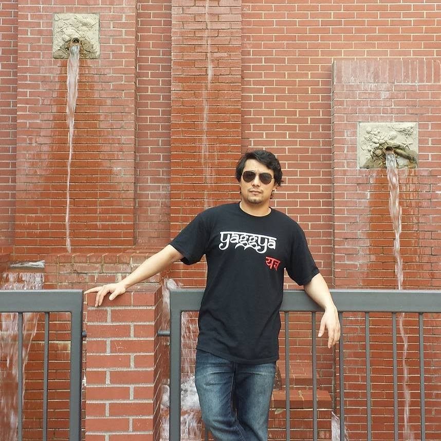

Hello, I am Samip Suwal, a Software Engineer living in Beverly MA US.
Currently working for JD Software.

Experience
JD SoftwareMay 2014 - current
Software engineer
As an software engineer worked on projects like Massachusetts Medical use of Marijuana, ARC, Cape Cod Water Quality, and Prescription Monitoring Program.
Salem State UniversityFeb 2015 - Jul 2015
Assistant to the Lab administrator
As an assistant to the lab administrator, worked with the computer science department's lab administrator with various tasks like, administration of windows servers and workstations, account management for MySQL server, SVN and Active Directory
Ministries of Aides InternationalAug 2006 - Jan 2007
Did some volunteer work at this non profit organization, to get some hands on experience. Here I got my first taste of web development.